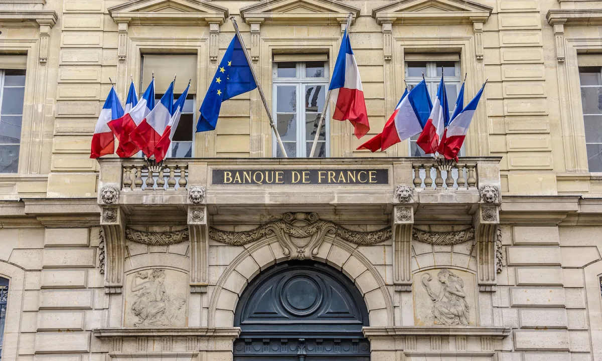
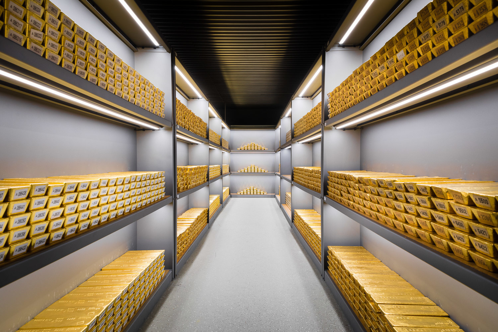

Expertise
Des consultants alliant expertise territoriale et sectorielle, rompus à l'exercice de recherche de financement qui capitalisent sur des centaines de dossiers de demande montés.
Identifiez et sécurisez les financements nécessaires à leur réalisation.


BPCE Finances & Territoires vous accompagne dans l'identification et la mobilisation sécurisée des financements nécessaires à la réussite de vos projets, en alliant expertise, stratégie et efficacité opérationnelle. Dans un contexte où les financements publics et privés non-bancaires évoluent rapidement, il est essentiel de pouvoir compter sur un partenaire :
Des consultants alliant expertise territoriale et sectorielle, rompus à l'exercice de recherche de financement qui capitalisent sur des centaines de dossiers de demande montés.
Une approche sur mesure, adaptée à vos besoins et enjeux.
20 ans d'expertise dans la mobilisation de financements pour des projets à vocation publique, privée et associative. Un accompagnement complet, de la veille au suivi des financements obtenus.
« Votre expertise et votre engagement ont été déterminants dans l'obtention des subventions accordées par l'Agence de l'eau et le Fonds Vert pour le réaménagement du parc Charles-de-Gaulle et de la Place Michelet. »Julien Chambon — Maire
Notre base référence plus de 18 600 dispositifs en métropole et DROM-COM, suivis par 20 experts.
Comprendre, anticiper et agir face aux évolutions du financement
Un accompagnement sur mesure avec un consultant dédié, à l'écoute de vos besoins.
La concrétisation de vos projets dans une approche responsable et durable.
Une veille rigoureuse et une méthodologie éprouvée, au service de la qualité.
Contactez-nous pour un échange personnalisé sur vos besoins en financement.